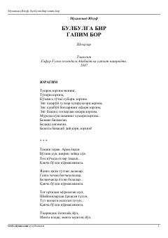

BBMuhammad Yusufning taniqli she'rlar to'plami.
Ushbu to'plam mashhur o'zbek shoiri Muhammad Yusufning lirik va hayotiy she'rlarini o'z ichiga oladi. Kitobda Vatan, ona tuproq, dehqonlar mehnati va insoniy tuyg'ular chuqur ifodalangan. Asar o'zining sammiymiyligi va ta'sirchanligi bilan ajralib turadi.